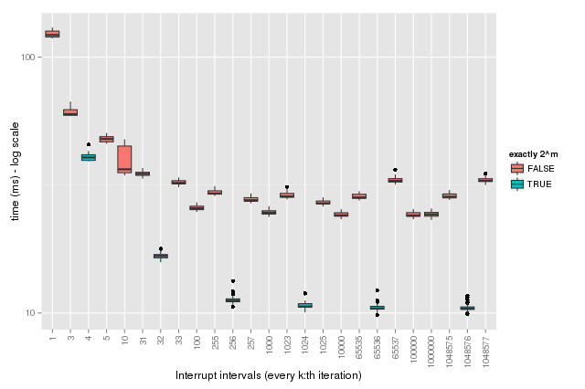

If your native code takes more than a few seconds to finish, it is a nice courtesy to the user to check for user interrupts (Ctrl-C) once in a while, say, every 1,000 or 1,000,000 iteration. The C-level API of R provides R_CheckUserInterrupt() for this (see ‘Writing R Extensions’ for more information on this function). Here’s what the code would typically look like:
for (int ii = 0; ii < n; ii++) {
/* Some computational expensive code */
if (ii % 1000 == 0) R_CheckUserInterrupt()
}This uses the modulo operator % and tests when it is zero, which happens every 1,000 iteration. When this occurs, it calls R_CheckUserInterrupt(), which will interrupt the processing and “return to R” whenever an interrupt is detected.
Interestingly, it turns out that, it is significantly faster to do this check every \(k=2^m\) iteration, e.g. instead of doing it every 1,000 iteration, it is faster to do it every 1,024 iteration. Similarly, instead of, say, doing it every 1,000,000 iteration, do it every 1,048,576 - not one less (1,048,575) or one more (1,048,577). The difference is so large that it is even 2-3 times faster to call R_CheckUserInterrupt() every 256 iteration rather than, say, every 1,000,000 iteration, which at least to me was a bit counter intuitive the first time I observed it.
Below are some benchmark statistics supporting the claim that testing / calculating ii % k == 0 is faster for \(k=2^m\) (blue) than for other choices of \(k\) (red).

Note that the times are on the log scale (the results are also tabulated at the end of this post). Now, will it make a big difference to the overall performance of you code if you choose, say, 1,048,576 instead of 1,000,000? Probably not, but on the other hand, it does not hurt to pick an interval that is a \(2^m\) integer. This observation may also be useful in algorithms that make lots of use of the modulo operator.
So why is ii % k == 0 a faster test when \(k=2^m\)? I can only speculate. For instance, the integer \(2^m\) is a binary number with all bits but one set to zero. It might be that this is faster to test for than other bit patterns, but I don’t know if this is because of how the native code is optimized by the compiler and/or if it goes down to the hardware/CPU level. I’d be interested in feedback and hear your thoughts on this.
UPDATE 2015-06-15: Thomas Lumley kindly replied and pointed me to fact that “the modulo of powers of 2 can alternatively be expressed as a bitwise AND operation”, which in C terms means that ii % 2^m is identical to ii & (2^m - 1) (at least for positive integers), and this is an optimization that the GCC compiler does by default. The bitwise AND operator is extremely fast, because the CPU can take the AND on all bits at the same time (think 64 electronic AND gates for a 64-bit integer). After this, comparing to zero is also very fast. The optimization cannot be done for integers that are not powers of two. So, in our case, when the compiler sees ii % 256 == 0 it optimizes it to become ii & 255 == 0, which is much faster to calculate than the non-optimized ii % 256 == 0 (or ii % 257 == 0, or ii % 1000000 == 0, and so on).
Details on how the benchmarking was done
I used the inline package to generate a set of C-level functions with varying interrupt intervals (\(k\)). I’m not passing \(k\) as a parameter to these functions. Instead, I use it as a constant value so that the compiler can optimize as far as possible, but also in order to imitate how most code is written. This is why I generate multiple C functions. I benchmarked across a wide range of interval choices using the microbenchmark package. The C functions (with corresponding R functions calling them) and the corresponding benchmark expressions to be called were generated as follows:
## The interrupt intervals to benchmark
## (a) Classical values
ks <- c(1, 10, 100, 1000, 10e3, 100e3, 1e6)
## (b) 2^k values and the ones before and after
ms <- c(2, 5, 8, 10, 16, 20)
as <- c(-1, 0, +1) + rep(2^ms, each = 3)
## List of unevaluated expressions to benchmark
mbexpr <- list()
for (k in sort(c(ks, as))) {
name <- sprintf("every_%d", k)
## The C function
assign(name, inline::cfunction(c(length = "integer"), body = sprintf("
int i, n = asInteger(length);
for (i=0; i < n; i++) {
if (i %% %d == 0) R_CheckUserInterrupt();
}
return ScalarInteger(n);
", k)))
## The corresponding expression to benchmark
mbexpr <- c(mbexpr, substitute(every(n), list(every = as.symbol(name))))
}The actual benchmarking of the 25 cases was then done by calling:
n <- 10e6 ## Number of iterations
stats <- microbenchmark::microbenchmark(list = mbexpr)| expr | min | lq | mean | median | uq | max |
|---|---|---|---|---|---|---|
| every_1(n) | 479.19 | 485.08 | 511.45 | 492.91 | 521.50 | 839.50 |
| every_3(n) | 184.08 | 185.74 | 197.86 | 189.10 | 197.31 | 321.69 |
| every_4(n) | 148.99 | 150.80 | 160.92 | 152.73 | 158.55 | 245.72 |
| every_5(n) | 127.42 | 129.25 | 134.18 | 131.26 | 134.69 | 190.88 |
| every_10(n) | 91.96 | 93.12 | 99.75 | 94.48 | 98.10 | 194.98 |
| every_31(n) | 65.78 | 67.15 | 71.18 | 68.33 | 70.52 | 113.55 |
| every_32(n) | 49.12 | 49.49 | 51.72 | 50.24 | 51.38 | 91.28 |
| every_33(n) | 63.29 | 64.01 | 67.96 | 64.76 | 68.79 | 112.26 |
| every_100(n) | 50.85 | 51.46 | 54.81 | 52.37 | 55.01 | 89.83 |
| every_255(n) | 56.05 | 56.48 | 59.81 | 57.21 | 59.25 | 119.47 |
| every_256(n) | 19.46 | 19.62 | 21.03 | 19.88 | 20.71 | 41.98 |
| every_257(n) | 53.32 | 53.70 | 57.16 | 54.54 | 56.34 | 96.61 |
| every_1000(n) | 44.76 | 46.68 | 50.40 | 47.50 | 50.19 | 121.97 |
| every_1023(n) | 53.68 | 54.89 | 57.64 | 55.57 | 57.71 | 111.59 |
| every_1024(n) | 17.41 | 17.55 | 18.86 | 17.80 | 18.78 | 43.54 |
| every_1025(n) | 51.19 | 51.72 | 54.09 | 52.28 | 53.29 | 101.97 |
| every_10000(n) | 42.82 | 45.65 | 48.09 | 46.20 | 47.83 | 82.92 |
| every_65535(n) | 51.51 | 53.45 | 55.68 | 54.00 | 55.04 | 87.36 |
| every_65536(n) | 16.74 | 16.84 | 17.91 | 16.99 | 17.37 | 47.82 |
| every_65537(n) | 60.62 | 61.44 | 65.16 | 62.56 | 64.93 | 104.71 |
| every_100000(n) | 43.68 | 44.48 | 46.81 | 44.98 | 46.51 | 83.33 |
| every_1000000(n) | 41.61 | 44.21 | 46.99 | 44.86 | 47.11 | 87.90 |
| every_1048575(n) | 50.98 | 52.80 | 54.92 | 53.55 | 55.36 | 72.44 |
| every_1048576(n) | 16.73 | 16.83 | 17.92 | 17.05 | 17.89 | 35.52 |
| every_1048577(n) | 60.28 | 62.58 | 65.43 | 63.92 | 65.91 | 87.58 |
I get similar results across various operating systems (Windows, OS X and Linux) all using GNU Compiler Collection (GCC).
Feedback and comments are apprecated!
To reproduce these results, do:
> path <- 'https://raw.githubusercontent.com/HenrikBengtsson/jottr.org/master/blog/20150604%2CR_CheckUserInterrupt'
> html <- R.rsp::rfile('R_CheckUserInterrupt.md.rsp', path = path)
> !html ## Open in browser